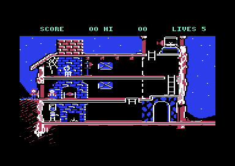
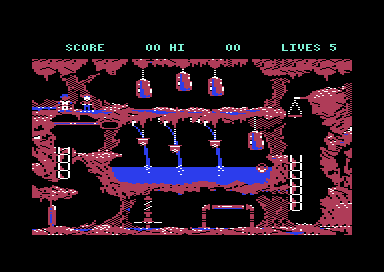
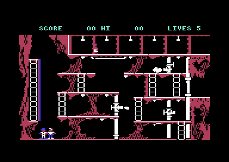
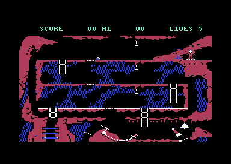
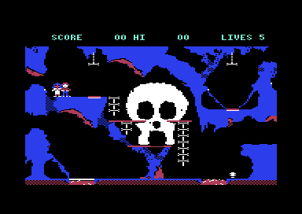
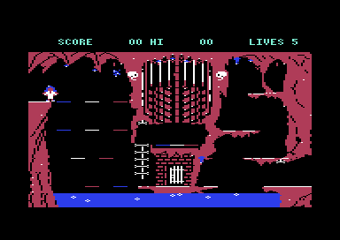
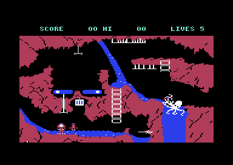
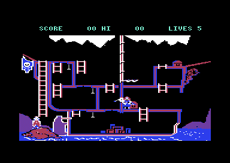
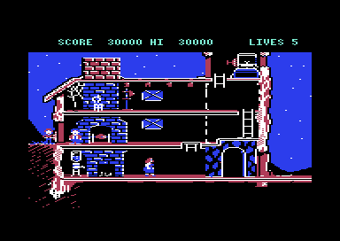

<meta charset="utf-8">
<meta name="viewport" content="width=device-width, initial-scale=1">
<title>{{title}}</title>
<link rel="preconnect" href="https://fonts.googleapis.com">
<link rel="stylesheet" href="https://fonts.googleapis.com/css2?family=Lato:wght@400;700;900&family=IBM+Plex+Mono:wght@400;500&display=swap">
<link rel="stylesheet" href="reference/goonies-page.css">
<!-- tabs -->
<header class="hero">
  <p class="eyebrow">{{platform}} · {{year}} · {{publisher}}</p>
  <h1>{{title}}</h1>
  <p class="sub">What the player does: two Goonies who take turns at the joystick, a jump that rises ten lines, eight scenes each solved by teamwork, and an ending that starts the game again.</p>
</header>
<main class="wrap">
<section id="goonies">
  <p class="fig">The two Goonies</p>
  <h2 class="t">Fire swaps which Goonie is the player</h2>
  <p class="lede">Every scene starts with two Goonies, the first two of the eleven object slots the game keeps in zero page. Each pass the game runs every slot's behaviour routine by the slot's type (<code>$0A80</code>), and the two Goonies differ only in their types.</p>
  <p>Type 1 is the Goonie under control: its routine reads the joystick and moves it (<code>$0AF9</code>). Type 2 is the one waiting, which gets "nothing pressed" every pass and so stands still, or falls if it was left in mid-air (<code>$0B62</code>). Pressing fire swaps the two slots' types, so the stick passes from one Goonie to the other where each stands.</p>
  <p>With two players, set by F3 on the title, the waiting Goonie's routine reads the joystick in port 2 instead (<code>$0BA9</code>), and both Goonies move at once. The <a href="controls.html">Controls</a> tab has the rest.</p>
</section>

<section id="jump">
  <p class="fig">Moving</p>
  <h2 class="t">A jump rises ten lines in four passes</h2>
  <p class="lede">The game moves everything once a pass, and a pass is four frames, 12.5 a second on a PAL machine (<code>$08D6</code>). A Goonie walks two units a pass, four pixels. Pushing up while standing on a floor starts a jump: <code>move_object</code> (<code>$0CFD</code>) sets the speed upwards to five lines, and gravity takes one line off it every pass, down to a fall of four.</p>
  <div class="tw"><table class="t">
    <tr><th>Pass</th><th class="n">1</th><th class="n">2</th><th class="n">3</th><th class="n">4</th><th class="n">5</th><th class="n">6</th><th class="n">7</th><th class="n">8</th><th class="n">9</th><th class="n">10</th></tr>
    <tr><td>Line</td><td class="n">102</td><td class="n">98</td><td class="n">95</td><td class="n">93</td><td class="n">92</td><td class="n">92</td><td class="n">93</td><td class="n">95</td><td class="n">98</td><td class="n">102</td></tr>
    <tr><td>Speed down</td><td class="n">&minus;4</td><td class="n">&minus;3</td><td class="n">&minus;2</td><td class="n">&minus;1</td><td class="n">0</td><td class="n">1</td><td class="n">2</td><td class="n">3</td><td class="n">4</td><td class="n">0</td></tr>
  </table></div>
  <p class="cap">A Goonie's line and speed at the start of each pass, from the moment up is pushed, recorded on the kit's 6502 machine running the game's own code from a saved moment of play. The first step is four lines, not five: gravity is applied in the same pass the jump begins.</p>
  <p>With left or right held, the same jump moves two units across each pass. A Goonie that walks off an edge falls the same way, one line faster each pass up to four, and no fall is too high: every one of the eighteen instructions that start a death is in a scene's hazard or a creature's routine, none in the movement code.</p>
  <p>Up is also the climb on a ladder and the grip on a bar. The scenes are built of rectangles of eight kinds, floors, walls, ladders, water, and bars to hang from, and the <a href="levels.html">Maps</a> tab draws every scene's rectangles over its picture.</p>
</section>

<section id="scenes">
  <p class="fig">The scenes</p>
  <h2 class="t">Every scene needs both Goonies at the exit</h2>
  <p class="lede">Each scene's exit routine waits until both Goonies stand in the exit, then adds 1,000 points and starts the next scene. Getting there takes a task for each Goonie. The table says what each scene's own code tests for.</p>
  <div class="gshots">
    <figure><figcaption>1 · The hideout</figcaption></figure>
    <figure><figcaption>2 · The cavern lake</figcaption></figure>
    <figure><figcaption>3 · The pipes</figcaption></figure>
    <figure><figcaption>4 · The rolling rocks</figcaption></figure>
    <figure><figcaption>5 · The bird and the eggs</figcaption></figure>
    <figure><figcaption>6 · The cage</figcaption></figure>
    <figure><figcaption>7 · The octopus</figcaption></figure>
    <figure><figcaption>8 · The pirate ship</figcaption></figure>
  </div>
  <div class="tablewrap" style="margin-top:22px"><table class="t">
    <tr><th>Scene</th><th>What opens the way</th><th>What kills a Goonie</th></tr>
    <tr><td>1 · The hideout</td><td>One Goonie works the money press on the top floor (<code>$7D41</code>), and Mama Fratelli walks off after the falling banknotes (<code>$7B09</code>). The other jumps into the water tank from below until it tips over and puts out the fire (<code>$7E6C</code>), which turns the fireplace into a way down (<code>$7CF3</code>) to the exit (<code>$8013</code>). A crate on the top floor can be pushed (<code>$7C05</code>).</td><td>Mama Fratelli</td></tr>
    <tr><td>2 · The cavern lake</td><td>A Goonie takes the key (<code>$774E</code>), crossing the lake on the float, which moves when a Goonie walks into it (<code>$76A4</code>); the door at the lower left opens once the key is taken (<code>$763F</code>).</td><td>the lake, three weights that drop onto the top ledge and their drips (<code>$75D4</code>), and a flier on a set path</td></tr>
    <tr><td>3 · The pipes</td><td>Each Goonie closes a vent by touching it; with the two that matter closed, the pipe bursts and opens the exit (<code>$8E53</code>).</td><td>the gunman on the right, who fires along a Goonie's row (<code>$8AEA</code>), an acid drop that slides along the ceiling and falls (<code>$8CBD</code>), and the jets from open vents</td></tr>
    <tr><td>4 · The rolling rocks</td><td>A Goonie standing on a floor under the chain opens that floor's gaps, so a rolling rock drops through (<code>$17A3</code>); a Goonie on the skid in the cellar swings the flap that sends it to the lever (<code>$1979</code>). Each rock on the lever takes away a plank, and with three gone the tunnel is open (<code>$1948</code>).</td><td>the five bats the bell releases each time it rings (<code>$18E9</code>)</td></tr>
    <tr><td>5 · The bird and the eggs</td><td>The bird drops eggs (<code>$8845</code>), and the Goonies push five onto the pile at the lower right (<code>$E33C</code>), which they climb to the exit. Hanging from a bone opens or shuts a lava bridge (<code>$E0B7</code>); tunnels join the rooms (<code>$E17A</code>).</td><td>the bird, lava under an open bridge, and a creature that hatches from an egg left too long (<code>$E539</code>)</td></tr>
    <tr><td>6 · The cage</td><td>Three pads decide which of thirteen platforms are solid, through eight patterns (<code>$F413</code>). Hanging from either lever opens the door's passage (<code>$F32B</code>).</td><td>nine drips from the ceiling (<code>$F23D</code>) and the lava along the bottom</td></tr>
    <tr><td>7 · The octopus</td><td>A Goonie knocks the crate off its ledge (<code>$97D6</code>), and it is pushed under the flipper lever. With the lever held down, a Goonie pulls the pond's plug (<code>$96EE</code>), the pond drains, and the octopus sinks out of the way (<code>$962A</code>).</td><td>the octopus's tentacles, a spot by the pond (<code>$95CE</code>), and fliers</td></tr>
    <tr><td>8 · The pirate ship</td><td>Four levers open three portholes (<code>$A0B6</code>), a lift by the mast carries a Goonie up (<code>$A049</code>), and pushing the chest on the top deck spills coins into the sea (<code>$9F0B</code>). Mama Fratelli follows the coins and falls in (<code>$9DEB</code>). The exit is by the chest (<code>$9DBE</code>).</td><td>Mama Fratelli while she guards the hold (<code>$9E62</code>), and the water below the ship</td></tr>
  </table></div>
  <p>The C64-Wiki's walkthrough says scene 8's tasks are fixed to one Goonie each.<sup class="fn"><a href="about.html#src-1" title="C64-Wiki, The Goonies">1</a></sup> No routine in scene 8 asks which Goonie it is: the levers, the lift, and the chest take either. The two Goonies do differ in this scene alone. Its start routine draws the second Goonie from other shapes (<code>$9D63</code>), a figure about three lines taller than the children of the other scenes. Whether that height keeps it from a task, through the scene's rectangles, has not been checked.</p>
</section>

<section id="points">
  <p class="fig">Points</p>
  <h2 class="t">Most of the score comes from the ending</h2>
  <p class="lede">The score is six decimal digits (<code>$12A7</code>), and every award in the game goes through one routine, <code>add_score</code> (<code>$852C</code>), which does nothing during the attract mode. These are all of its callers.</p>
  <table class="t">
    <tr><th class="n">Points</th><th>For</th></tr>
    <tr><td class="n">1,000</td><td>both Goonies at a scene's exit, eight times a round</td></tr>
    <tr><td class="n">5,000 &times; (lives + 1)</td><td>reaching the ending (<code>$A4E1</code>)</td></tr>
    <tr><td class="n">500</td><td>scene 7: pulling the pond's plug</td></tr>
    <tr><td class="n">200</td><td>scene 1: the crate's first push; scene 2: the key; scene 3: bursting the pipe</td></tr>
    <tr><td class="n">100</td><td>scene 1: the press's first use, and each step a Goonie tips the tank; scene 8: Mama Fratelli in the water</td></tr>
    <tr><td class="n">50</td><td>scene 5: an egg onto the pile; scene 7: knocking the crate off its ledge</td></tr>
    <tr><td class="n">35</td><td>scene 4: a rock on the plank lever, while planks remain</td></tr>
  </table>
  <p>The ending's bonus counts the lives left and one more, so a round finished with no deaths and five lives pays 30,000, against 8,000 for the eight exits. The C64-Wiki gives 5,000 for each Goonie left;<sup class="fn"><a href="about.html#src-1" title="C64-Wiki, The Goonies">1</a></sup> the loop at <code>$A4E6</code> runs once more than the lives. The ending entered with five lives and no score showed SCORE 30000.</p>
</section>

<section id="lives">
  <p class="fig">Lives</p>
  <h2 class="t">A death restarts the scene but keeps the work done</h2>
  <p class="lede">A Goonie that dies shows two frames for sixteen passes, then a life goes and the scene starts again (<code>$0BD3</code>). A game starts with five lives (<code>$0868</code>), finishing scene 4 adds three, up to nine (<code>$181B</code>), and losing a life with none left ends the game.</p>
  <p>A restart runs the scene's start routine with a flag that says it is a restart (<code>$12BA</code>), and six scenes use it to keep what was done:</p>
  <table class="t">
    <tr><th>Scene</th><th>Kept after a death</th></tr>
    <tr><td>1 · The hideout</td><td>the tank, once it has begun to tip, and the fire it put out</td></tr>
    <tr><td>2 · The cavern lake</td><td>the key, once taken</td></tr>
    <tr><td>3 · The pipes</td><td>the vents already closed</td></tr>
    <tr><td>4 · The rolling rocks</td><td>the planks already gone, and the bell's count</td></tr>
    <tr><td>5 · The bird and the eggs</td><td>the eggs on the pile</td></tr>
    <tr><td>7 · The octopus</td><td>the crate, once fallen, and the drained pond</td></tr>
  </table>
  <p>Scenes 6 and 8 never look at the flag, so a death there starts them from scratch: the ship's chest goes back to the start of the deck.</p>
</section>

<section id="round">
  <p class="fig">The ending</p>
  <h2 class="t">Secret: the ending starts the game again, and pays its bonus again</h2>
  <p class="lede">After scene 8 the ship sails across the screen. When it reaches the right (<code>$A4F8</code>), the game sets the scene to 0, scene 1, and enters it the way an exit enters the next scene. The score and the lives are left as they were.</p>
  <figure class="overview-shot"><figcaption>Scene 1 straight after the ending, still with the ending's 30,000 points and five lives.</figcaption></figure>
  <p>So the game has no end. Each round pays the exits again and the ending's bonus again, and scene 4 adds three lives each time, up to nine. A round with no deaths that starts with nine lives ends with a bonus of 50,000. The six digits go back to 000000 after 999,999: <code>add_score</code> drops the carry out of the top digit.</p>
</section>
</main>
<footer style="margin:16px 0 0;padding:22px var(--gx) 0;border-top:1px solid #e0ded8;font-family:'IBM Plex Mono',ui-monospace,Menlo,monospace;font-size:12px;color:#80838a"><a href="https://github.com/gamesexplained/gamesexplained" style="color:#1f5fa8;text-decoration:none">GitHub</a> · <a href="https://discord.gg/3V9GWyRDWV" style="color:#1f5fa8;text-decoration:none">Discord</a><br>© Games Explained contributors. Write-ups, facts and symbol maps are available under <a href="https://creativecommons.org/licenses/by-sa/4.0/" style="color:#1f5fa8;text-decoration:none">CC BY-SA 4.0</a>; code under <a href="https://opensource.org/licenses/MIT" style="color:#1f5fa8;text-decoration:none">MIT</a></footer>
